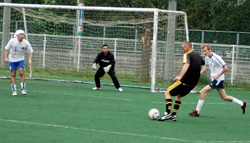
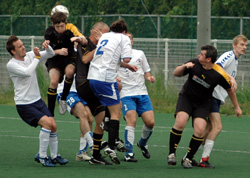
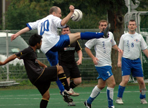

|
Hachioji Park, Saturday 23rd August,

Having been part of the team since it began (this time last year) I have seen many changes to the team, the way we play and the score lines. The score lines have got better, the players faster (and it seems younger!!) and the team more fluid. This was definitely the case for our first game of the season. A rejuvenated side and a fresh challenge against Jets 2nd saw us fully commit to going forward and believe it or not to score!
We started the game in control, holding the ball, passing to feet with very littlelost or given away, this brough about a confident attack towards goal with Dan and Chris crossing the ball in to be attacked with our splendid array of strikers, Jon, Sid, Giuseppe and George. The mid-fielders controlled the game and provided the wings with movement and support making moving the ball forward easy.
Being a defender I have to say this is one of the easiest games I have played for the panthers, usually I wonder when the battering is going to stop!
Our new team captain, Romen, encouraged a Benitez style rotation which enabled us to stay fresh and continue to challenge as the other team tired and faded away.
The first half ended goalless with some interesting referee and linesman decisions being upheld, Nick swears he was onside at the time of getting past the defender, but you roll with the punches.

We came out the second half as we did in the first with purpose and precision. After continuing to probe the Jets defense we broke through with a bullet launched from 25yrds by Giuseppe, the goalie reached but the ball was so far up into the left corner he stood no chance. This spurred us on further and we continued to get balls into the box which both Dan and Sid took advantage of.
As the game was coming to a close the Jets managed to get a ball through our defense which force me to chase, kick, miss the ball and supposedly foul their striker, I of course disagree fervently!! The Jets striker took his place to take the penalty, shot to the right but was beaten by our returning goalie Vincent, the score line remained 3-0 and we celebrated our first victory in style with a BBQ in the rain!
Report by Lee Rawlinson
|